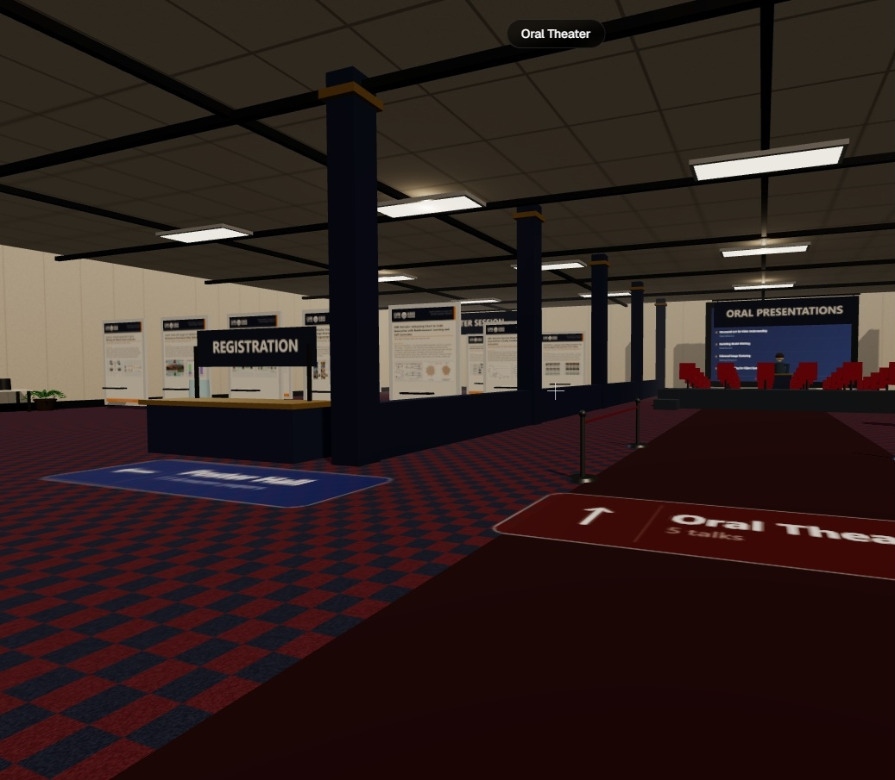
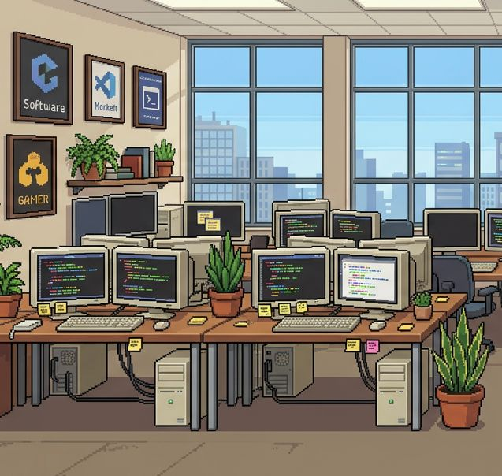
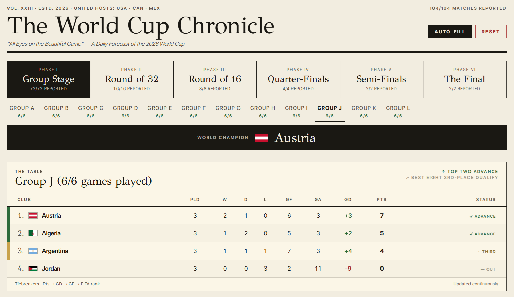
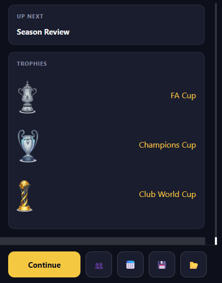
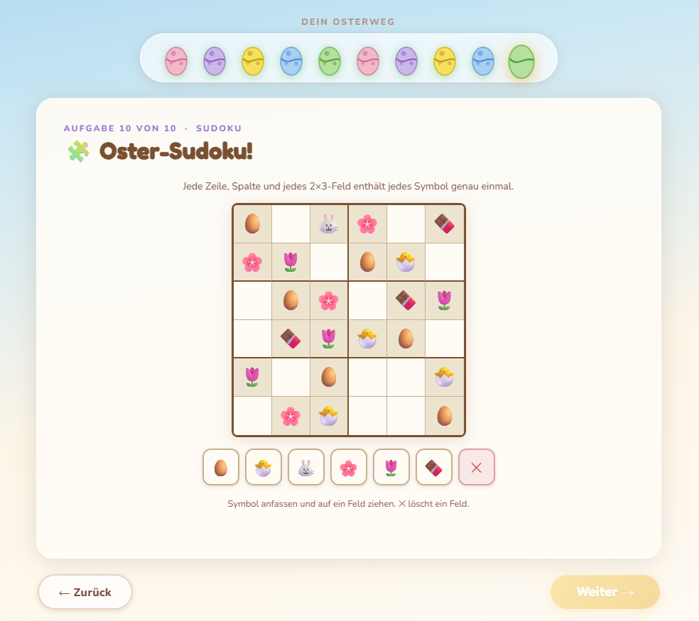
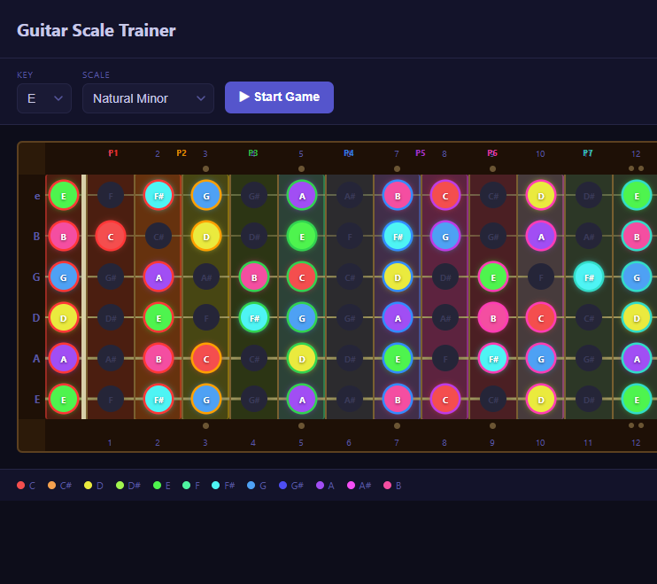

M.Sc. and Ph.D. in computer vision
Both with highest distinction. Thesis on object segmentation and tracking.
Author and leadership coach
My career ran on two tracks. In research, computer vision took me to a tenured position as Senior Researcher at Graz University of Technology. At Amazon, twelve years took me from founding a science team in Berlin to Director of Science. Today I focus on writing a book and coaching leaders, and my newsletter passes on what both tracks taught me about leading people.

My book · The Leadership Fork · out in 2027
Same crisis. Same people.
One team unravels. One grows.
The difference? Habits you can learn.
Free, every two weeks: one team story drawn from real moments, and the habit behind it. Plus Chapter 1 free in your welcome email.
The story behind the book
For more than a decade at Amazon, one question fascinated me: why do some teams consistently outperform others with the same talent, tools and resources? The answer was rarely skill or intent. It was a handful of small behaviors, repeated until they became the team’s culture.
That’s the idea behind my book, The Leadership Fork, coming in 2027. It is built on stories rather than frameworks, because the lessons that matter most emerge in messy, human moments: a difficult conversation, a decision under pressure. Strip away the context, and you often strip away the lesson. Every story comes from a moment I witnessed, lived through, or caused at Amazon.
In each chapter, two teams reach the same fork in the road. One slides into dysfunction, the other grows. From their choices I distill 55 practical mechanisms. One comes from the best advice of my career, and it came from my wife: add the word “yet.” “I can’t do this” becomes “I can’t do this yet.” Small things that change everything.
Through my newsletter, I share these stories as I write them, along with practical lessons on leadership and teams.
The Leadership Fork newsletter
Bonus: the full first chapter arrives in your welcome email.
Free. Unsubscribe with one click from any email. Form not loading? Subscribe on Substack.
Where the habits come from
Most people who write about leading teams come from one side. My first track was research, from student to tenured senior researcher. My second was twelve years turning research into products at Amazon.
Both with highest distinction. Thesis on object segmentation and tracking.
Led the Virtual Habitat research group and supervised eight PhD students.
At ICPR, ACCV and twice at OAGM, plus the Josef Krainer Prize of the State of Styria for early-career scientific achievement.
ICPR 2008 award ceremony photoJosef Krainer Prize article (German)
★ Best paper award at that venue. Full record on Google Scholar.
Founded and built the computer vision science team in Berlin, from the first hire to its culture.
Grew the team and its research to production pipelines across multiple Amazon product lines.
Led a cross-functional computer vision and AI organization across several German sites.
Key product launches
2026 · Both tracks meet
That is what both tracks taught me, and what the book is about.
Leadership & coaching
Coaching was never a side job for me. It was how I led. Everything below can be learned and trained, and helping leaders build it is now my full focus.
Skills are built, not fixed. I help people read discomfort as a sign that they are growing: ask the question they have been avoiding, treat a failure as data, and keep learning while what they know goes out of date faster every year.
When a project derails, strong leaders don’t start with explanations. They ask: “What can I do right now?” I coach people to take back that agency: owning outcomes, not just credit, and choosing to be useful over being comfortable when it counts.
Whether a good idea ever ships often comes down to communication. I work with leaders on giving and receiving honest feedback without flinching, managing up, and influencing people who don’t report to them.
Talent alone doesn’t make a great team; people also need to feel safe speaking up. I help leaders spot quiet dysfunctions, like a team that polishes appearances instead of delivering outcomes, and build teams where strong people do their best work.
Good decisions come from good thinking tools. I help leaders build a small set of mental models, such as first-principles reasoning, inversion and systems thinking, so they can cut through noise and know when to push on and when to stop.
AI is changing what leaders do, and the old playbooks only go so far. I share what I have tried myself: using AI as a judgment-free thinking partner and tutor, prototyping an idea in minutes, and rethinking what impact means when AI does more of the work.
The book · out in 2027
Five situations every leader faces. 55 mechanisms for when the playbook stops working.
The Launch DisasterPsychological safety
Six months of work go live, and the launch corrupts the order records millions of customers rely on. Rolling back does not undo the damage, and nobody knows why.
The Friction PointCollaboration
Weeks before a hard December deadline, a specification change wipes out six weeks of an engineer’s work and forces him into a tense collaboration with the designer behind it.
The Olympus BetExecution
Months into a flagship project with a fixed November deadline, new data shows that the team’s whole technical approach has become the wrong one.
The Choice PointDecision making
Around eighty proposals compete for a year of investment. In the first minute of planning, a visiting director declares what the real problem is, and the room has to decide whether to believe it.
The AI FrontierLeading through change
A company-wide mandate to bring AI into every team lands on both teams the same day, with the same pressure and the same tools.
Writing
Longer pieces on leadership, learning and AI, on Substack, Medium and LinkedIn.
From a near-failed engineering degree to Director of Science at Amazon, and why I’m now writing a book and starting a newsletter.
Read on Substack → Growth mindsetWith AI, you can ask any question without anyone judging you. What still holds most of us back is giving ourselves permission to ask.
Read on LinkedIn → Generative AIAs a kid on the C64, I wanted to build my own game, but programming it was too complex and took too much time. Decades later, AI made it happen.
Read on Medium →Projects
Side projects I build with AI, mostly games and learning tools. Every one is live, so you can try it.

A 3D conference simulator: walk through a CVPR venue, browse the poster sessions, sit in on oral talks and visit the industry fair.
A prediction game for the 2026 FIFA World Cup: tip every match, track your picks through the tournament and climb the leaderboard.

A point-and-click comedy adventure. HR has lost your separation agreement, and you have to find it and get out of the office without being fired.
Read the story behind it →
Play through the 2026 World Cup yourself: enter results from the group stage to the final and see who lifts the trophy.
Japanese vocabulary practice with audio, built for German speakers.

A story-driven soccer management game: one season as manager of FC Valhalla, with choices that branch into different endings.

An Easter treasure hunt for kids, in German: puzzles, songs and clues that lead to the Easter nest.

An interactive fretboard for learning guitar scales and modes.
Contact